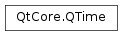

QTime¶
Synopsis¶
Functions¶
- def
__eq__(other) - def
__ge__(other) - def
__gt__(other) - def
__le__(other) - def
__lt__(other) - def
__ne__(other) - def
__reduce__() - def
__repr__() - def
addMSecs(ms) - def
addSecs(secs) - def
elapsed() - def
hour() - def
isNull() - def
isValid() - def
minute() - def
msec() - def
msecsSinceStartOfDay() - def
msecsTo(arg__1) - def
restart() - def
second() - def
secsTo(arg__1) - def
setHMS(h, m, s[, ms=0]) - def
start() - def
toPython() - def
toString([f=Qt.TextDate]) - def
toString(format)
Static functions¶
- def
currentTime() - def
fromMSecsSinceStartOfDay(msecs) - def
fromString(s, format) - def
fromString(s[, f=Qt.TextDate]) - def
isValid(h, m, s[, ms=0])
Detailed Description¶
The
PySide2.QtCore.QTimeclass provides clock time functions.A
PySide2.QtCore.QTimeobject contains a clock time, i.e. the number of hours, minutes, seconds, and milliseconds since midnight. It can read the current time from the system clock and measure a span of elapsed time. It provides functions for comparing times and for manipulating a time by adding a number of milliseconds.
PySide2.QtCore.QTimeuses the 24-hour clock format; it has no concept of AM/PM. UnlikePySide2.QtCore.QDateTime,PySide2.QtCore.QTimeknows nothing about time zones or daylight-saving time (DST).A
PySide2.QtCore.QTimeobject is typically created either by giving the number of hours, minutes, seconds, and milliseconds explicitly, or by using the static functionPySide2.QtCore.QTime.currentTime(), which creates aPySide2.QtCore.QTimeobject that contains the system’s local time. Note that the accuracy depends on the accuracy of the underlying operating system; not all systems provide 1-millisecond accuracy.The
PySide2.QtCore.QTime.hour(),PySide2.QtCore.QTime.minute(),PySide2.QtCore.QTime.second(), andPySide2.QtCore.QTime.msec()functions provide access to the number of hours, minutes, seconds, and milliseconds of the time. The same information is provided in textual format by thePySide2.QtCore.QTime.toString()function.
PySide2.QtCore.QTimeprovides a full set of operators to compare twoPySide2.QtCore.QTimeobjects.PySide2.QtCore.QTimeA is considered smaller thanPySide2.QtCore.QTimeB if A is earlier than B.The
PySide2.QtCore.QTime.addSecs()andPySide2.QtCore.QTime.addMSecs()functions provide the time a given number of seconds or milliseconds later than a given time. Correspondingly, the number of seconds or milliseconds between two times can be found usingPySide2.QtCore.QTime.secsTo()orPySide2.QtCore.QTime.msecsTo().
PySide2.QtCore.QTimecan be used to measure a span of elapsed time using thePySide2.QtCore.QTime.start(),PySide2.QtCore.QTime.restart(), andPySide2.QtCore.QTime.elapsed()functions.
-
class
PySide2.QtCore.QTime¶ -
class
PySide2.QtCore.QTime(QTime) -
class
PySide2.QtCore.QTime(h, m[, s=0[, ms=0]]) Parameters: - h –
PySide2.QtCore.int - m –
PySide2.QtCore.int - ms –
PySide2.QtCore.int - s –
PySide2.QtCore.int - QTime –
PySide2.QtCore.QTime
Constructs a null time object. A null time can be a
PySide2.QtCore.QTime(0, 0, 0, 0) (i.e., midnight) object, except thatPySide2.QtCore.QTime.isNull()returnstrueandPySide2.QtCore.QTime.isValid()returnsfalse.Constructs a time with hour
h, minutem, secondssand millisecondsms.hmust be in the range 0 to 23,mandsmust be in the range 0 to 59, andmsmust be in the range 0 to 999.See also
- h –
-
PySide2.QtCore.QTime.TimeFlag¶
-
PySide2.QtCore.QTime.__reduce__()¶ Return type: PyObject
-
PySide2.QtCore.QTime.__repr__()¶ Return type: PyObject
-
PySide2.QtCore.QTime.addMSecs(ms)¶ Parameters: ms – PySide2.QtCore.intReturn type: PySide2.QtCore.QTimeReturns a
PySide2.QtCore.QTimeobject containing a timemsmilliseconds later than the time of this object (or earlier ifmsis negative).Note that the time will wrap if it passes midnight. See
PySide2.QtCore.QTime.addSecs()for an example.Returns a null time if this time is invalid.
-
PySide2.QtCore.QTime.addSecs(secs)¶ Parameters: secs – PySide2.QtCore.intReturn type: PySide2.QtCore.QTimeReturns a
PySide2.QtCore.QTimeobject containing a timesseconds later than the time of this object (or earlier ifsis negative).Note that the time will wrap if it passes midnight.
Returns a null time if this time is invalid.
Example:
n = QTime(14, 0, 0) # n == 14:00:00 t = QTime() t = n.addSecs(70) # t == 14:01:10 t = n.addSecs(-70) # t == 13:58:50 t = n.addSecs(10 * 60 * 60 + 5) # t == 00:00:05 t = n.addSecs(-15 * 60 * 60) # t == 23:00:00
-
static
PySide2.QtCore.QTime.currentTime()¶ Return type: PySide2.QtCore.QTimeReturns the current time as reported by the system clock.
Note that the accuracy depends on the accuracy of the underlying operating system; not all systems provide 1-millisecond accuracy.
-
PySide2.QtCore.QTime.elapsed()¶ Return type: PySide2.QtCore.intReturns the number of milliseconds that have elapsed since the last time
PySide2.QtCore.QTime.start()orPySide2.QtCore.QTime.restart()was called.Note that the counter wraps to zero 24 hours after the last call to
PySide2.QtCore.QTime.start()or restart.Note that the accuracy depends on the accuracy of the underlying operating system; not all systems provide 1-millisecond accuracy.
Warning
If the system’s clock setting has been changed since the last time
PySide2.QtCore.QTime.start()orPySide2.QtCore.QTime.restart()was called, the result is undefined. This can happen when daylight-saving time is turned on or off.
-
static
PySide2.QtCore.QTime.fromMSecsSinceStartOfDay(msecs)¶ Parameters: msecs – PySide2.QtCore.intReturn type: PySide2.QtCore.QTimeReturns a new
PySide2.QtCore.QTimeinstance with the time set to the number ofmsecssince the start of the day, i.e. since 00:00:00.If
msecsfalls outside the valid range an invalidPySide2.QtCore.QTimewill be returned.
-
static
PySide2.QtCore.QTime.fromString(s[, f=Qt.TextDate])¶ Parameters: - s – unicode
- f –
PySide2.QtCore.Qt.DateFormat
Return type: Returns the time represented in the
stringas aPySide2.QtCore.QTimeusing theformatgiven, or an invalid time if this is not possible.Note that uses a “C” locale encoded string to convert milliseconds to a float value. If the default locale is not “C”, this may result in two conversion attempts (if the conversion fails for the default locale). This should be considered an implementation detail.
-
static
PySide2.QtCore.QTime.fromString(s, format) Parameters: - s – unicode
- format – unicode
Return type: Returns the
PySide2.QtCore.QTimerepresented by thestring, using theformatgiven, or an invalid time if the string cannot be parsed.These expressions may be used for the format:
Expression Output h the hour without a leading zero (0 to 23 or 1 to 12 if AM/PM display) hh the hour with a leading zero (00 to 23 or 01 to 12 if AM/PM display) m the minute without a leading zero (0 to 59) mm the minute with a leading zero (00 to 59) s the whole second, without any leading zero (0 to 59) ss the whole second, with a leading zero where applicable (00 to 59) z the fractional part of the second, to go after a decimal point, without trailing zeroes (0 to 999). Thus “ s.z” reports the seconds to full available (millisecond) precision without trailing zeroes.zzz the fractional part of the second, to millisecond precision, including trailing zeroes where applicable (000 to 999). AP interpret as an AM/PM time. AP must be either “AM” or “PM”. ap Interpret as an AM/PM time. ap must be either “am” or “pm”. All other input characters will be treated as text. Any sequence of characters that are enclosed in single quotes will also be treated as text and not be used as an expression.
time = QTime.fromString("1mm12car00", "m'mm'hcarss") # time is 12:01.00
If the format is not satisfied, an invalid
PySide2.QtCore.QTimeis returned. Expressions that do not expect leading zeroes to be given (h, m, s and z) are greedy. This means that they will use two digits even if this puts them outside the range of accepted values and leaves too few digits for other sections. For example, the following string could have meant 00:07:10, but the m will grab two digits, resulting in an invalid time:time = QTime.fromString("00:710", "hh:ms") # invalid
Any field that is not represented in the format will be set to zero. For example:
time = QTime.fromString("1.30", "m.s") # time is 00:01:30.000
-
PySide2.QtCore.QTime.hour()¶ Return type: PySide2.QtCore.intReturns the hour part (0 to 23) of the time.
Returns -1 if the time is invalid.
-
PySide2.QtCore.QTime.isNull()¶ Return type: PySide2.QtCore.boolReturns
trueif the time is null (i.e., thePySide2.QtCore.QTimeobject was constructed using the default constructor); otherwise returns false. A null time is also an invalid time.See also
-
PySide2.QtCore.QTime.isValid()¶ Return type: PySide2.QtCore.boolReturns
trueif the time is valid; otherwise returnsfalse. For example, the time 23:30:55.746 is valid, but 24:12:30 is invalid.See also
-
static
PySide2.QtCore.QTime.isValid(h, m, s[, ms=0]) Parameters: - h –
PySide2.QtCore.int - m –
PySide2.QtCore.int - s –
PySide2.QtCore.int - ms –
PySide2.QtCore.int
Return type: PySide2.QtCore.boolThis is an overloaded function.
Returns
trueif the specified time is valid; otherwise returns false.The time is valid if
his in the range 0 to 23,mandsare in the range 0 to 59, andmsis in the range 0 to 999.Example:
QTime.isValid(21, 10, 30) # returns True QTime.isValid(22, 5, 62) # returns False
- h –
-
PySide2.QtCore.QTime.minute()¶ Return type: PySide2.QtCore.intReturns the minute part (0 to 59) of the time.
Returns -1 if the time is invalid.
-
PySide2.QtCore.QTime.msec()¶ Return type: PySide2.QtCore.intReturns the millisecond part (0 to 999) of the time.
Returns -1 if the time is invalid.
-
PySide2.QtCore.QTime.msecsSinceStartOfDay()¶ Return type: PySide2.QtCore.intReturns the number of msecs since the start of the day, i.e. since 00:00:00.
-
PySide2.QtCore.QTime.msecsTo(arg__1)¶ Parameters: arg__1 – PySide2.QtCore.QTimeReturn type: PySide2.QtCore.intReturns the number of milliseconds from this time to
t. Iftis earlier than this time, the number of milliseconds returned is negative.Because
PySide2.QtCore.QTimemeasures time within a day and there are 86400 seconds in a day, the result is always between -86400000 and 86400000 ms.Returns 0 if either time is invalid.
-
PySide2.QtCore.QTime.__ne__(other)¶ Parameters: other – PySide2.QtCore.QTimeReturn type: PySide2.QtCore.boolReturns
trueif this time is different fromt; otherwise returnsfalse.
-
PySide2.QtCore.QTime.__lt__(other)¶ Parameters: other – PySide2.QtCore.QTimeReturn type: PySide2.QtCore.boolReturns
trueif this time is earlier thant; otherwise returnsfalse.
-
PySide2.QtCore.QTime.__le__(other)¶ Parameters: other – PySide2.QtCore.QTimeReturn type: PySide2.QtCore.boolReturns
trueif this time is earlier than or equal tot; otherwise returnsfalse.
-
PySide2.QtCore.QTime.__eq__(other)¶ Parameters: other – PySide2.QtCore.QTimeReturn type: PySide2.QtCore.boolReturns
trueif this time is equal tot; otherwise returnsfalse.
-
PySide2.QtCore.QTime.__gt__(other)¶ Parameters: other – PySide2.QtCore.QTimeReturn type: PySide2.QtCore.boolReturns
trueif this time is later thant; otherwise returnsfalse.
-
PySide2.QtCore.QTime.__ge__(other)¶ Parameters: other – PySide2.QtCore.QTimeReturn type: PySide2.QtCore.boolReturns
trueif this time is later than or equal tot; otherwise returnsfalse.
-
PySide2.QtCore.QTime.restart()¶ Return type: PySide2.QtCore.intSets this time to the current time and returns the number of milliseconds that have elapsed since the last time
PySide2.QtCore.QTime.start()or was called.This function is guaranteed to be atomic and is thus very handy for repeated measurements. Call
PySide2.QtCore.QTime.start()to start the first measurement, and for each later measurement.Note that the counter wraps to zero 24 hours after the last call to
PySide2.QtCore.QTime.start()or .Warning
If the system’s clock setting has been changed since the last time
PySide2.QtCore.QTime.start()or was called, the result is undefined. This can happen when daylight-saving time is turned on or off.
-
PySide2.QtCore.QTime.second()¶ Return type: PySide2.QtCore.intReturns the second part (0 to 59) of the time.
Returns -1 if the time is invalid.
-
PySide2.QtCore.QTime.secsTo(arg__1)¶ Parameters: arg__1 – PySide2.QtCore.QTimeReturn type: PySide2.QtCore.intReturns the number of seconds from this time to
t. Iftis earlier than this time, the number of seconds returned is negative.Because
PySide2.QtCore.QTimemeasures time within a day and there are 86400 seconds in a day, the result is always between -86400 and 86400.does not take into account any milliseconds.
Returns 0 if either time is invalid.
-
PySide2.QtCore.QTime.setHMS(h, m, s[, ms=0])¶ Parameters: - h –
PySide2.QtCore.int - m –
PySide2.QtCore.int - s –
PySide2.QtCore.int - ms –
PySide2.QtCore.int
Return type: PySide2.QtCore.boolSets the time to hour
h, minutem, secondssand millisecondsms.hmust be in the range 0 to 23,mandsmust be in the range 0 to 59, andmsmust be in the range 0 to 999. Returnstrueif the set time is valid; otherwise returnsfalse.See also
- h –
-
PySide2.QtCore.QTime.start()¶ Sets this time to the current time. This is practical for timing:
t = QTime() t.start() some_lengthy_task() print ("Time elapsed: %d ms" % t.elapsed())
-
PySide2.QtCore.QTime.toPython()¶ Return type: PyObject
-
PySide2.QtCore.QTime.toString([f=Qt.TextDate])¶ Parameters: f – PySide2.QtCore.Qt.DateFormatReturn type: unicode This is an overloaded function.
Returns the time as a string. The
formatparameter determines the format of the string.If
formatisQt.TextDate, the string format is HH:mm:ss; e.g. 1 second before midnight would be “23:59:59”.If
formatisQt.ISODate, the string format corresponds to the ISO 8601 extended specification for representations of dates, represented by HH:mm:ss. To include milliseconds in the ISO 8601 date, use theformatQt.ISODateWithMs, which corresponds to HH:mm:ss.zzz.If the
formatisQt.SystemLocaleShortDateorQt.SystemLocaleLongDate, the string format depends on the locale settings of the system. Identical to callingQLocale.system().PySide2.QtCore.QTime.toString()(time,QLocale.ShortFormat) orQLocale.system().PySide2.QtCore.QTime.toString()(time,QLocale.LongFormat).If the
formatisQt.DefaultLocaleShortDateorQt.DefaultLocaleLongDate, the string format depends on the default application locale. This is the locale set withQLocale.setDefault(), or the system locale if no default locale has been set. Identical to callingQLocale().toString(time, QLocale.ShortFormat)orQLocale().toString(time, QLocale.LongFormat).If the
formatisQt.RFC2822Date, the string is formatted in an RFC 2822 compatible way. An example of this formatting is “23:59:20”.If the time is invalid, an empty string will be returned.
-
PySide2.QtCore.QTime.toString(format) Parameters: format – unicode Return type: unicode
© 2018 The Qt Company Ltd. Documentation contributions included herein are the copyrights of their respective owners. The documentation provided herein is licensed under the terms of the GNU Free Documentation License version 1.3 as published by the Free Software Foundation. Qt and respective logos are trademarks of The Qt Company Ltd. in Finland and/or other countries worldwide. All other trademarks are property of their respective owners.